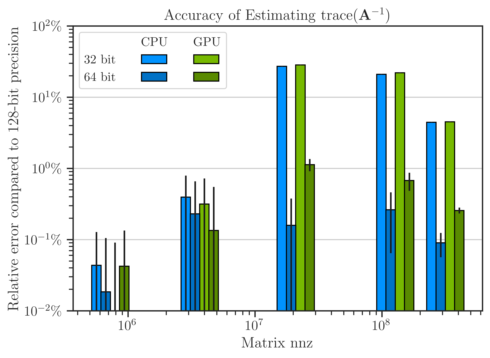
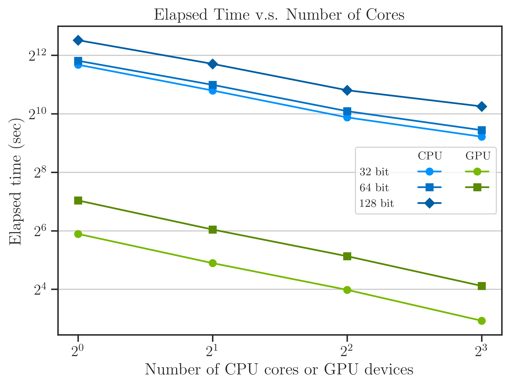

Performance on GPU Farm#
The performance of imate is tested on multi-GPU devices and the results are compared with the performance on a CPU cluster.
Test Description#
The performance test computes the quantity
where \(\mathbf{A}\) is symmetric and positive-definite. The above quantity is a computationally expensive expression that frequently appears in the Jacobian and Hessian of likelihood functions in machine learning.
Algorithm#
To compute (1), the stochastic Lanczos quadrature (SLQ) algorithm is employed. The complexity of this algorithm is
where \(n\) is the matrix size, \(\mathrm{nnz}(\mathbf{A})\) is the number of nonzero elements of the sparse matrix \(\mathbf{A}\), \(l\) is the number of Lanczos iterations, and \(s\) is the number of Monte-Carlo iterations (see details in imate.traceinv(method=’slq’)). The numerical experiment is performed with \(l=80\) and \(s=200\).
Hardware#
The computations were carried out on the following hardware:
For CPU test: Intel(R) Xeon(R) CPU E5-2670 v3 with 24 threads.
For GPU test: a cluster of eight NVIDIA® GeForce RTX 3090 GPUs and Intel Xeon Processor (Skylake, IBRS) with 32 threads.
Benchmark Matrices#
The table below shows the matrices used in the test, which are chosen from SuiteSparse Matrix Collection that are generated for real applications. The matrices in the table below are all symmetric positive-definite and the number of nonzero elements (nnz) of these matrices increase approximately by the factor of 5 on average.
Matrix Name |
Size |
nnz |
Application |
|---|---|---|---|
468 |
5,172 |
Structural Problem |
|
4,800 |
27,520 |
Electromagnetics |
|
19,366 |
134,208 |
Structural Problem |
|
150,102 |
726,674 |
Circuit Simulation |
|
525,825 |
3,674,625 |
Computational Fluid Dynamics |
|
1,465,137 |
21,005,389 |
Computational Fluid Dynamics |
|
2,911,419 |
127,729,899 |
Structural Problem |
|
4,147,110 |
329,499,284 |
Structural Problem |
Arithmetic Types#
The benchmark test also examines the performance and accuracy of imate on various arithmetic types of the matrix data. To this end, each of the above matrices were re-cast into 32-bit, 64-bit, and 128-bit floating point arithmetics. Depending on the hardware, the followings data types were tested:
For CPU test: 32-bit, 64-bit and 128-bit floating point data.
For GPU test: 32-bit, 64-bit floating point data.
Note
Supporting 128-bit data types is one of the features if imate, which is often not available in numerical libraries.
Note
NVIDIA CUDA libraries do not support 128-data types.
Results#
Scalability with Data Size#
The figure below shows the scalability by the relation between the elapsed (wall) time versus the data size.
The data size is indicated by the matrix nnz (rather than the matrix size). However, the matrix size can be found by the hollow circle marks in the figure.
GPU test: 8 GPU devices were used.
CPU test: 16 CPU cores were used.

The computation on GPU is advantageous over CPU at nnz larger than roughly \(10^{5}\). The elapsed time \(t\) is related to the number of nonzero elements \(\mathrm{nnz}\) by
where the exponent \(\alpha\) for each experiment asymptotically approaches to the values shown in the table below. It can be seen that the performance is close to the theoretical complexity (2).
Also, the figure shows that processing 32-bit data is at most twice faster than 64-bit data on both CPU and GPU, and 64-bit data is at least twice faster than 128-bit on CPU.
Extreme Array Sizes#
There above results indicate imate is highly scalable on both CPU and GPU on massive data. However, there are a number of factors that can limit the data size. For instance, hardware memory limit is one such factor. Another limiting factor is the maximum array length in bits to store the content of a sparse matrix. Interestingly, this factor is not a hardware limitation, rather, is related to the maximum integer (often 32-bit int type) to index the array (in bits) on the memory. The 128-bit format of Queen_4147 matrix is indeed close to such limit. The above results show that imate is scalable to large scales before reaching such an array size limit.
Beyond Extreme Array Sizes#
imate can be configured to handle even larger data (if one can indeed store such array of data). To do so, increase the integer space for matrix indices by changing UNSIGNED_LONG_INT=1 in /imate/imate/_definitions/definition.h file, or in terminal set
export UNSIGNED_LONG_INT=1
$env:export UNSIGNED_LONG_INT = "1"
Then, recompile imate. See Compile from Source.
Floating Point Arithmetic Accuracy#
The error of floating point arithmetic of iterative algorithms is sensible on large data. In this test, the result of 32-bit and 64-bit data are compared with the result of 128-bit as a benchmark and shown in the figure below. The results show that both 32-bit and 64-bit data have less than \(0.1 \%\) error relative to 128-bit data. However, for data larger than \(10^{7}\), the error of 32-bit data is \(30 \%\) relative to 128-bit data whereas 64-bit data maintain \(0.1 \sim 1 \%\) error. Because of this, 64-bit data is often a good balance between accuracy and speed.
{kind=link}
Scalability with Increase of GPU Devices#
The scalability of imate is examined by the increase of the number of CPU threads or GPU devices as shown in the figure below.
{kind=link}
The above results correspond to only Queen_4147, which is the largest matrix on the list. The performance on GPUs are over thirty-fold faster than the CPU for the same number of threads and GPU devices, although, this may not be a fair comparison. However, the performance of one GPU device is yet five times faster than 8 CPU threads.
The elapsed (wall) time, \(t\), can be related to the number of CPU threads or GPU devices, \(m\), as
The estimated values of \(\beta\) from the curves on the figure are shown in the table below. The speed (inverse of elapsed time) per CPU thread tend to saturate by the increase off the number of CPU threads. In contrast, the GPU results show better scalability as it maintains the linear behaviour by the increase of the number of GPU devices.
How to Reproduce Results#
Scripts to reproduce the above results is available
Run Locally#
Run the script /imate/benchmark/scripts/benchmark_speed.py as follows.
To test CPU:
cd /imate/benchmark/scripts python ./benchmark_speed.py -c
To test GPU:
cd /imate/benchmark/scripts python ./benchmark_speed.py -g
Submit Job to Cluster with SLURM#
The SLURM job file to submit the CPU test is available at
/imate/benchmark/jobfiles/jobfile_benchmark_speed_cpu.sh. Submit the job bycd /imate/benchmark/jobfiles sbatch jobfile_benchmark_speed_cpu.sh
The SLURM job file to submit the GPU test is available at
/imate/benchmark/jobfiles/jobfile_benchmark_speed_gpu.sh. Submit the job bycd /imate/benchmark/jobfiles sbatch jobfile_benchmark_speed_gpu.sh